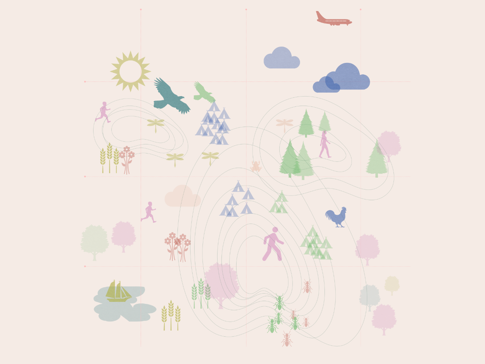

I am a Design Producer with a passion for strategic design, innovation & co-creation and design fiction.
I have a passion for creative design processes and methodologies, kin-making and breaking up with the anthropocene. I am strategic and I value to always be two steps ahead. I am curious, humanity-centered and enjoy to ask why and push boundaries. Last but not least I am strongly passionate about the uncontrollableness of nature, biomimicry and making fermented vegan cheese.
I have a MSc Digital Design and Interactive Technologies from the IT-University of Copenhagen and I have worked closely with innovative clients as IKEA, Tryg and Red Barnet.
For a more detailed description about what i do or anything else that comes to your mind please reach out at natasha@varney.dk or call me on 26745063 for at chat..
